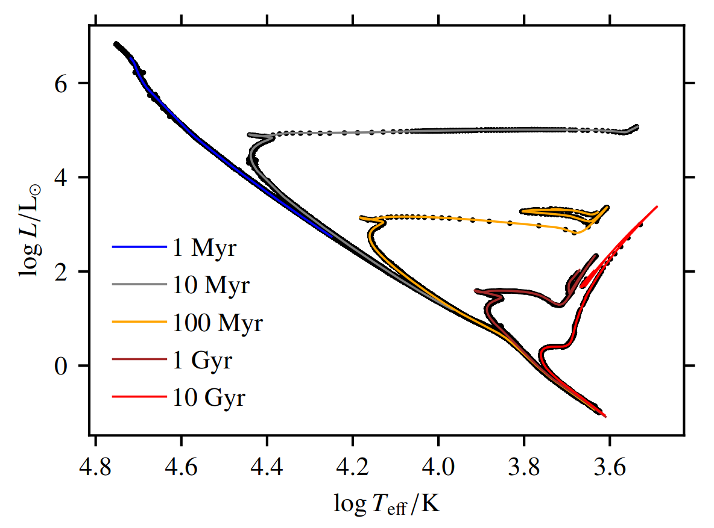
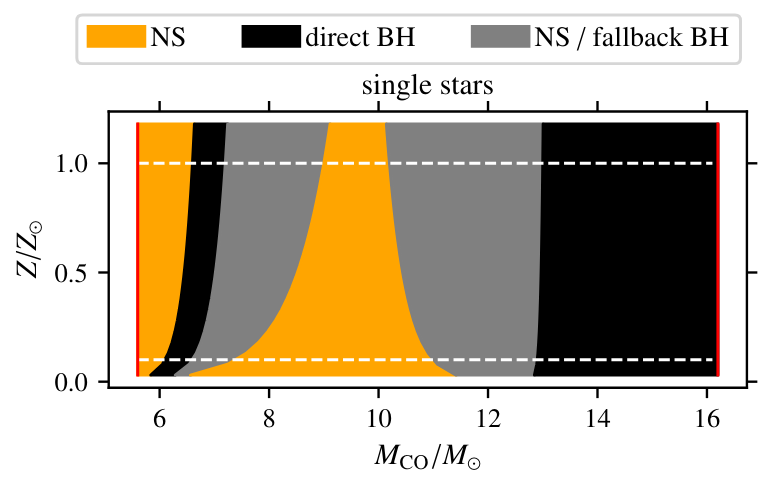

I am a recent PhD graduate in Physics at the University of Heidelberg
and currently looking for a postdoc!
My research interests are the evolution of massive stars, core collapse supenovae and gravitational wave astrophysics. One of the main tools used in my research is supervised machine learning.
For the complete list of published works, please refer to my ORCID id.
Explodability criteria for the neutrino-driven supernova mechanism,
K. Maltsev, F. R. N. Schneider, I. Mandel, B. Müller, A. Heger, F. K. Röpke and E. Laplace,
submitted to A&A, arXiv:2503.23856
Gravitational-wave model for neutron star merger remnants with supervised learning,
T. Soultanis, K. Maltsev, A. Bauswein, K. Chatziioannou, F. K. Röpke and N. Stergioulas,
2025, Phys. Rev. D 111, 023002, doi:10.1103/PhysRevD.111.023002
Statistical modeling of the progenitor evolution and formation of neutron stars and stellar-mass black holes,
K. Maltsev, 2024, PhD thesis, University of Heidelberg,
doi:10.11588/heidok.00036020
Scalable stellar evolution forecasting,
K. Maltsev, F. R. N. Schneider, F. K. Röpke, A. I. Jordan, G. A. Qadir, W. E. Kerzendorf, K. Riedmiller and P. van der Smagt,
2024, Astronomy & Astrophysics 681, A86, doi:10.1051/0004-6361/202347118
Substituting density functional theory in reaction barrier calculations for hydrogen atom transfer in proteins,
K. Riedmiller, P. Reiser, E. Bobkova, K. Maltsev, G. Gryn'ova, P. Friederich and F. Gräter,
2024, Chem. Sci. vol. 15, doi:10.1039/D3SC03922F
Stellar gravitational collapse, singularity formation and theory breakdown,
K. Maltsev, 2023, World Scientific ISBN #9789811269776, doi:10.1142/9789811269776_0298
Thermodynamics of Classical Schwarzschild Black Holes,
K. Maltsev, 2021, Astron. Rep., Vol. 65, Issue 10, p.976-984
doi:10.1134/S1063772921100218
Research
EVOLUTION OF MASSIVE STARS:
Efficient stellar evolution forecasting up to the end of core helium burning
Many astrophysical studies require efficient but reliable predictive models of stellar evolution. Examples are iterative optimization-based stellar parameter inference,
population synthesis, stellar N-body dynamics and large-scale galactic evolution simulations. In this work, we use supervised
machine learning methods to construct a model predicting the evolutionary sequence from the zero-age-main-sequence up to the end of core-helium-burning over
a mass range from red dwarves to the most massive Wolf-Rayet stars. The deep learning based emulator model is trained on evolutionary tracks pre-computed with the stellar evolution code MESA,
and acquires the capability to generalize predictions over a continuous parameter space. It casts millions of predictions within tens of seconds on a 4-core CPU, while keeping the
predictive errors orders of magnitude below typical observational uncertainties. doi:10.1051/0004-6361/202347118

Comparison of theoretical isochrones (computed using the stellar evolution code MESA) with the point predictions
(casted by the machine learning based emulator model). Each color-coded isochrone shows the position of stars of the same age in the Hertzsprung-Russell diagram
(spanned by the effective temperature Teff
and bolomentric luminosity ).
The emulator point predictions are scatter-plotted in black.
Mass dependence of convective core overshooting
In-progress work. Details to follow.
NEUTRON STAR AND BLACK HOLE FORMATION FROM IRON CORE COLLAPSE:
Successful or failed supernova? Neutron star or black hole?
Massive stars undergoing iron core collapse (CC) at the end of their evolution terminate their lives either in successful or failed supernovae (SNe).
Failure of the neutrino-driven SN mechanism results in black hole formation by direct collapse. Its success leads to a SN explosion,
leaving either a neutron star or a fallback black hole behind. In this work, we formulate explodability criteria that allow to predict the final fates of massive stars already at the pre-SN stage.
We use these to derive a CCSN recipe applicable for rapid binary population synthesis. arXiv:2503.23856

The final fate landscape of massive single stars undergoing iron core collapse, as predicted by CCSN recipe introduced in this work.
The compact remnant type is color-coded (NS = neutron star, BH = black hole) in a diagram spanned by the carbon-oxygen core mass
and the metallicity
. Similar landscapes are obtained for massive binary-stripped stars.
Foundational questions related to black hole formation
Does the prediction of gravitational singularity formation in stellar gravitational collapse by General Relativity theory indicate its breakdown? doi:10.1142/9789811269776_0298
Gravitational waves from neutron star merger remnants
The merger of two neutron stars (NS) results either in prompt collapse to a black hole or in a quasi-stable hypermassive neutron star (HMNS). The HMNS is
supported by differential rotation, thermal effects and repulsive nuclear forces, and continues to emit gravitational waves (GWs) until it either stabilizes or undergoes a delayed collapse to
a black hole. One of the ways to detect GWs on Earth is the matched-filtering technique, which requires efficient GW template models that are scanned
through the interferometry data in order to find GW signals in a noise background. In this work, we run numerical relativity simulations of neutron star mergers at variable
total mass up to the threshold mass for prompt collapse. We then use this data for supervised learning to construct a time-domain model
for the GWs emitted by HMNSs that remain quasi-stable over at least 17 ms, for two different fixed equations of state: APR4 and SFHX. The model is fast and accurate enough to be
used for real signal searches at advanced LIGO sensitivity. doi:10.1103/PhysRevD.111.023002
Gravitational wave emission from a neutron star merger remnant in the time domain. The output of a numerical relativity simulation is shown in black.
It is part of the test data set, which the supervised learning model has not seen during the training. The prediction by the fitted supervised learning
model is shown in orange.
Estimation of the chirp masses and the rates of observable binary black hole mergers
Data science and machine learning internships, 2019 - 2020
Master of Studies in Philosophy of Physics, University of Oxford (UK), 2018 - 2019
Master of Science in Physics, University of Münster (Germany), 2016 - 2018
Applied research internships and social entrepreneurship, 2015 - 2016
Bachelor of Science in Physics, University of Münster, 2011 - 2015
Bachelor of Arts in Physics and Philosophy, University of Münster, 2011 - 2015
AWARDS and FELLOWSHIPS:
Fellow of the International Max Planck Research School for Astronomy and Cosmic Physics, University of Heidelberg, 2020 - 2024
Graduate scholarship, German Academic Exchange Service (DAAD), 2018 - 2019
Trainee, European Space Agency (ESA), 2017 - 2018
funded 4-months research stay at the European Space and Astronomy Center (ESAC)
Talent support scholarship, Konrad Adenauer Foundation (KAF), 2013 - 2018
ERASMUS program, 01/2014 - 07/2014
3rd year physics courses at ENS Cachan (today: ENS Paris-Saclay)
3rd year philosophy courses at Université Paris I Panthéon-Sorbonne
Visiting student fellowship, University of Oxford, 10/2013 - 12/2013
TEACHING:
Tutor in Stellar Astrophysics (masters class in Physics), University of Heidelberg, summer term 2023,
Tutor in Analytical Mechanics and Thermodynamics (bachelor class in Physics), University of Heidelberg, summer term 2022
Lecturer on selected topics in Computer Vision, Kulturforum Alte Post, summer term 2020
ACADEMIC SERVICE:
Journal referee for The Astrophysical Journal (ApJ), APJ Letters, Astronomy & Computing and Royal Astronomical Society Techniques & Instruments (RASTI)
Co-supervision of Master student Vijayalakshmi V. Nair, Physics of Stellar Objects group, Heidelberg Institute for Theoretical Studies, since 11/2023
Organization of parallel session on Machine Learning for Stellar Astrophysics, XVII Winter Workshop on Stellar Astrophysics, Heidelberg Institute for Theoretical Studies, 18-19/12/2023
Co-organization of workshop on Machine Learning and Bayesian methods to fit stellar atmosphere models of massive stars to observations,
CZS summer school on Scientific Machine Learning in Astrophysics, University of Heidelberg, 14-18/08/2023
Mentor of physics-interested ukrainian refugee high-school student, since 07/2023
OUTREACH:
Organization of half-day workshop "Astrophysics in Heidelberg" for former scholars of the Konrad Adenauer Foundation, Heidelberg Institute for Theoretical Studies, 19/05/2023.
Contribution with two public talks (in german):
Introduction to stellar evolution, and
Threats of Earth habitability from cosmic space versus from anthropogenic climate change
Organization and discussion chairing, Artificial Creativity discussion round, Heidelberg Institute for Theoretical Studies, 19/07/2021
Public speaking:
Introduction to astronomy: cosmic distance scales, Studierendenrat, University of Heidelberg, 15/04/2023
The vacuum in classical vs. in quantum field theory, Ruskin School of Art, University of Oxford, 22/01/2019
Guide at hands-on stations and poster sessions:
Universe on Tour – Lights out! Stars on! roadshow, Federal Ministry of Education and Research (BMBF), Heidelberg, 21/07/2023
Digital Worlds Explore Science festival 2022, Klaus Tschira Foundation, Mannheim (Germany), 25/06/2022
Structure and Symmetry Highlights of Physics festival 2017, BMBF, Münster, 19-23/09/2017
Interdisciplinary art work development with artists, with council funding and gallery hall exhibitions:
WissenschafftKunst, Kulturforum Alte Post, Neuss, 2020 - 2021
Oxford Society for Art and Ecology, Ruskin School of Art, Oxford, 2018 - 2019
Talks
INVITED TALKS:
Explodability criteria for the neutrino-driven supernova mechanism, SESTAS seminar, Max Planck Institute for Astrophysics, Garching (Germany), 13/11/2024
Progenitor evolution, formation and collapse of neutron stars, Astro AI Lab, Interdisciplinary Center for Scientific Computing, University of Heidelberg, 09/07/2024
Explodability criteria for rapid binary population synthesis, Gravitational Wave Astrophysics group, Institute for Theoretical Astrophysics, University of Heidelberg, 03/05/2024
Stellar evolution emulators, Astrophysics group seminar, School of Physics and Mathematics, University of Surrey (UK), 22/02/2024 (online)
Surrogate modeling applications in stellar astrophysics, Astrophysics research seminar, Los Alamos National Laboratory (USA), 28/09/2023 (online)
Supervised learning for construction of matched-filtering templates of gravitational waves from the binary neutron star post-merger phase, Nuclear Astrophysics and Structure research seminar,
GSI Helmholtz Centre for Heavy Ion Research, Darmstadt (Germany), 12/05/2023
CONTRIBUTED TALKS (selection):
Explodability criteria for rapid binary population synthesis, European Astronomical Society Meeting 2024, Padova (Italy), 01/07/2024
What is the ultimate fate of matter in stellar gravitational collapse?, Foundational challenges in cosmological studies of black holes workshop, University of Bonn, Bonn (Germany), 14/05/2024
Stellar evolution forecasting with a timescale-adapted evolutionary coordinate and machine learning, Spring Meeting 2024 of the German Physical Society (DPG), Berlin (Germany), 08/03/2024
Prediction of stellar evolution tracks, gravitational waves and core collapse supernova outcomes with machine learning, 18th Australian National Institute for Theoretical Astrophysics workshop,
Monash University (Australia), 07/02/2024
Convective core overshooting effects on compact remnant mass and Type II explosion energy landscapes from massive single star evolution, Transients Down Under conference, Swinburne Institute of Technology (Australia), 29/01/2024
Efficient stellar evolution and final fate forecasting over continuous parameter spaces, 17th Stellar Astrophysics winter workshop, Heidelberg Institute for Theoretical Studies, 13/12/2022
Deep learning emulation of the MESA/MIST stellar evolution models, VLT-Flames massive star conference, Heidelberg Institute for Theoretical Studies, 22/06/2022
The Penrose 1965 singularity theorem in historical context of the black hole paradigm, 16th Marcel Grossmann Meeting, International Center for Relativistic Astrophysics, Rome (Italy), 8/07/2021 (online)
On the foundations of black hole thermodynamics, 4th International Zel'dovich Meeting, International Center for Relativistic Astrophysics, Minsk (Belarus), 07/09/2020 (online)
On computational theories of mind, The Ockham Society seminar, University of Oxford, 06/06/2019
Black Hole 'singularity': breakdown of general relativity theory?, Spring Meeting 2019 of the German Physical Society (DPG), Munich (Germany), 18/03/2019
Bayesian parameter estimation of Monte-Carlo modelled astrophysical red noise, European Space and Astronomy Center, European Space Agency (ESA), Villanueva de la Cañada (Spain), 06/04/2018
Characterization of power-law noise, Self Organization and Complexity group seminar, University of Münster, 05/02/2018
Interior Schwarzschild solution, stars and astrophysical high energy emission, international summer school Understanding Relativity Theory: Special and General, University of Tübingen (Germany), 02/08/2017